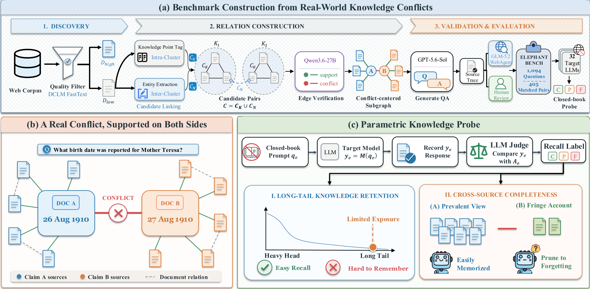

Long-tail QA
Was the rare fact recalled?
Useful for retention, but usually scores against a single canonical answer.
A closed-book knowledge probe
Can a language model remember a long-tail fact—and recover all of its different verified accounts?
1Tsinghua University · 2Tencent Youtu Lab · 3University of Warwick

The problem
Factual QA usually assumes one canonical answer. Long-tail web knowledge is different: evidence is sparse, sources may preserve incompatible accounts, and a model can recall the prevailing view while silently omitting another verified account.
Long-tail QA
Useful for retention, but usually scores against a single canonical answer.
ElephantBench
Sources are withheld. The model must recover every verified account from parametric memory.
Open-book conflict benchmarks
Useful for reading and reasoning, but typically exposes the conflict at inference time.
Epistemic myopia
A response may be locally correct yet globally incomplete: the model remembers one documented account and presents it as the whole story.
Benchmark construction
A graph-based pipeline discovers naturally occurring disagreements, gathers support on both sides, and converts each verified conflict into a matched question pair.
Discover
Mine the filtered remainder of a web corpus, where low-exposure facts are less saturated by repetition.
Link
Knowledge-point tags form precise local clusters; normalized entities recover related documents across clusters.
Classify
An LLM reads full document pairs and induces support and conflict edges for the same subject–attribute pair.
Synthesize
Each sampled conflict edge is expanded with support neighbors. Its local subgraph yields one named-entity and one clue-based question.
Verify
An independent LLM checks the full seed documents, a web agent seeks external evidence, and human reviewers conduct the final audit.
Probe
Each conflict yields a named-entity question and a clue-based question with the same verified answer set.
What one item looks like
Source documents establish the reference answers during construction, but are concealed from every evaluated model.
“Mother Teresa was born on August 26, 1910 … as Agnes Gonxha Bojaxhiu.”
“Mother Teresa, Agnes Gonxha Bojaxhiu, was born in Skopje, Macedonia on August 27, 1910.”
What birth date was reported for Mother Teresa?
What birth date was reported for the Albanian-born Roman Catholic nun who founded the Missionaries of Charity and received the 1979 Nobel Peace Prize?
Diagnostic scoring
Instead of collapsing behavior into one accuracy number, ElephantBench partitions every response into complete, partial, or failed recall, with C + P + F = 1.
Every verified account is recovered without a material contradiction.
Higher is betterAt least one, but not every, verified account is recovered.
Lower is betterNo verified account is recovered, or the response materially contradicts the references.
Lower is betterK = C / (C + P) measures the share of complete recall among questions where at least one verified account is remembered.
Higher is betterMain findings
Across 32 open-weight and proprietary model configurations, incomplete recall remains the dominant failure mode once a long-tail fact becomes accessible.
Strongest single model
Nearly all remaining questions are answered with only part of the verified account set.
A greedy oracle over all configurations raises complete recall substantially, yet 18.8% of questions remain partial for every model.
Scale
Larger models generally reduce complete failure, yet many questions still recover only part of the verified account set.
Reasoning
Reasoning improves complete recall for some frontier models, but can suppress the less salient account in smaller models.
Exposure asymmetry
Exposure to the prevailing view helps a model remember the fact. Exposure to its less frequently reported counterpart is more closely associated with recalling the full account set.
Use ElephantBench
Run target models closed-book, grade responses with the published rubric, compute C/P/F/K, or reconstruct the benchmark from the source corpus.
# Install the evaluation toolkit
git clone https://github.com/pzs19/ElephantBench.git
cd ElephantBench
python -m pip install -e .
# Query a model without sources or tools
elephantbench-run \
--input data/elephantbench.jsonl \
--output outputs/my-model.jsonl \
--model my-model --resume
# Judge and compute C / P / F / K
elephantbench-judge --benchmark data/elephantbench.jsonl \
--responses outputs/my-model.jsonl \
--output outputs/my-model.judged.jsonl \
--judge-model my-judge-model
elephantbench-score --benchmark data/elephantbench.jsonl \
--results outputs/my-model.judged.jsonlCitation
@misc{pan2026elephantbench,
title = {Blind Men and the Elephant: Probing the Epistemic
Myopia of LLMs under Long-Tail Divergent Knowledge},
author = {Pan, Zhuoshi and Lu, Junru and Qian, Yan and
Zhao, H. Vicky and Yin, Di and Sun, Xing},
year = {2026},
url = {https://pzs19.github.io/ElephantBench/}
}